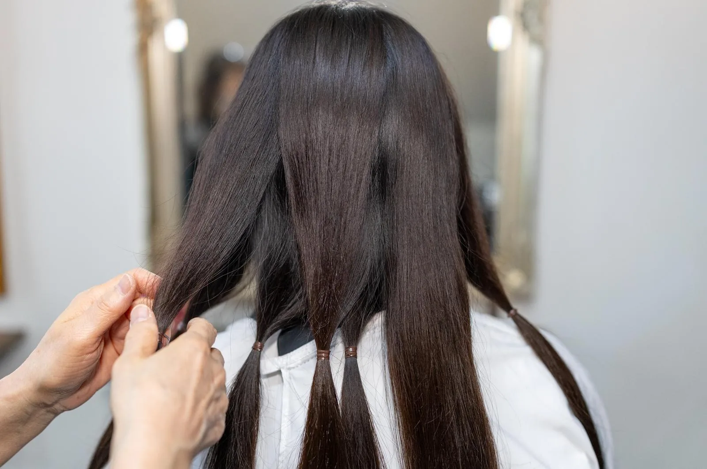
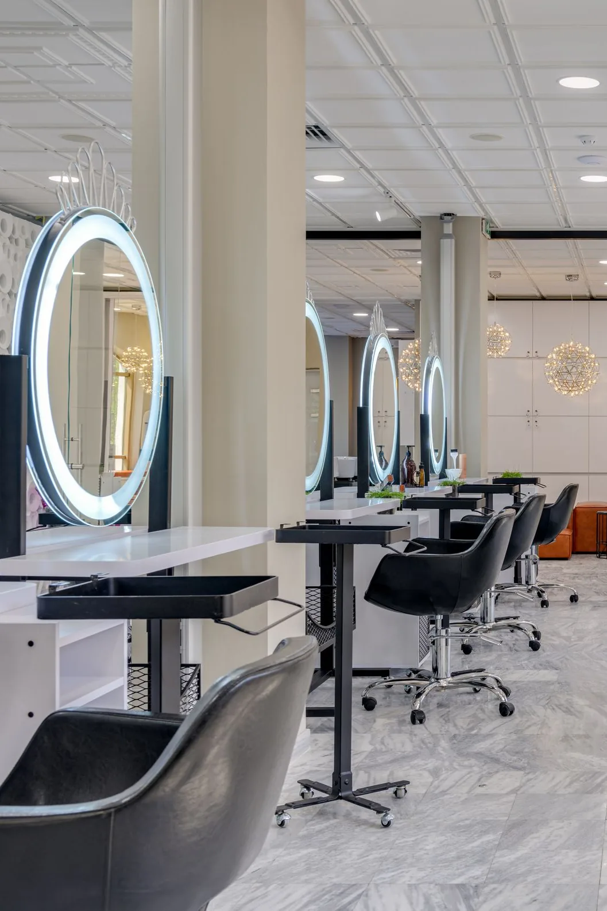
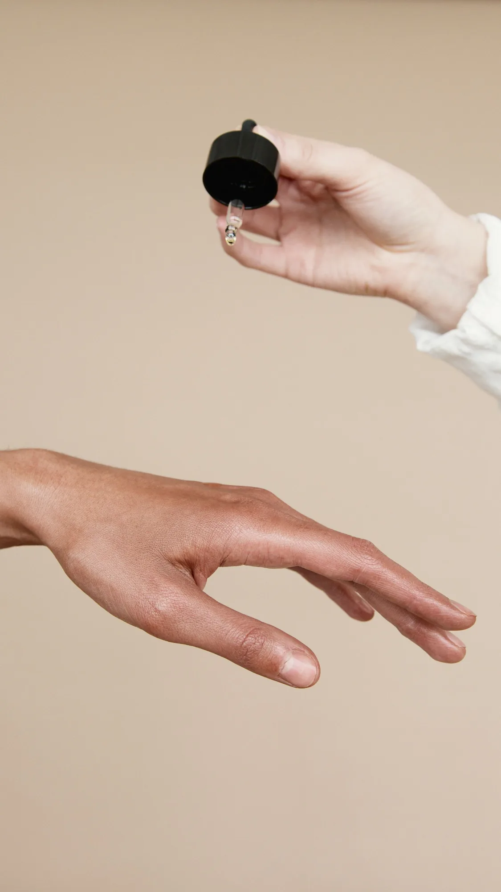
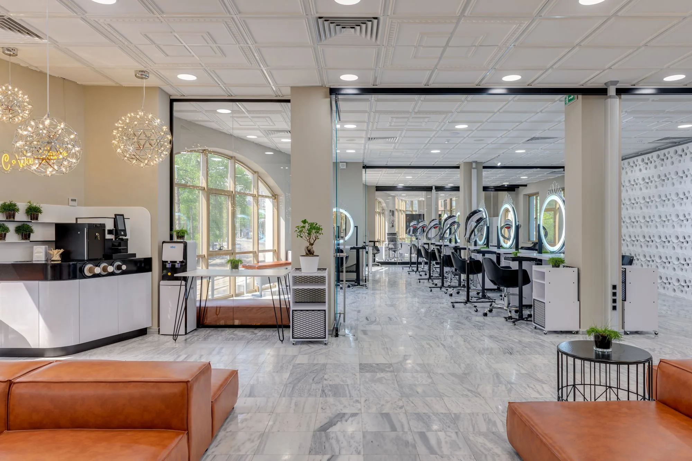

01
髪質改善への徹底的なこだわり
飛騨高山の清らかな風と木漏れ日が差し込む空間で、心も髪も洗われるような時間を過ごしてください。
私たちは、あなたの髪の本来持つ美しさを引き出すため、素材と技術に徹底的にこだわっています。
上品で静かな世界観の中で、30 代から 40 代の女性が自分らしく輝ける場所を目指しています。

髪質改善への徹底的なこだわり
自然光が織りなす空間

一人ひとりに寄り添う施術

飛騨高山のお店の静かな空間。木漏れ日が差し込む店内は、心穏やかになる静寂に包まれています。
上品でモダンなインテリアが、あなたのリラックスした時間をサポートします。

飛騨高山の清らかな風と木漏れ日が差し込む空間で、心も髪も洗われるような時間を過ごしてください。
ご予約は電話で承っております
ご予約へ